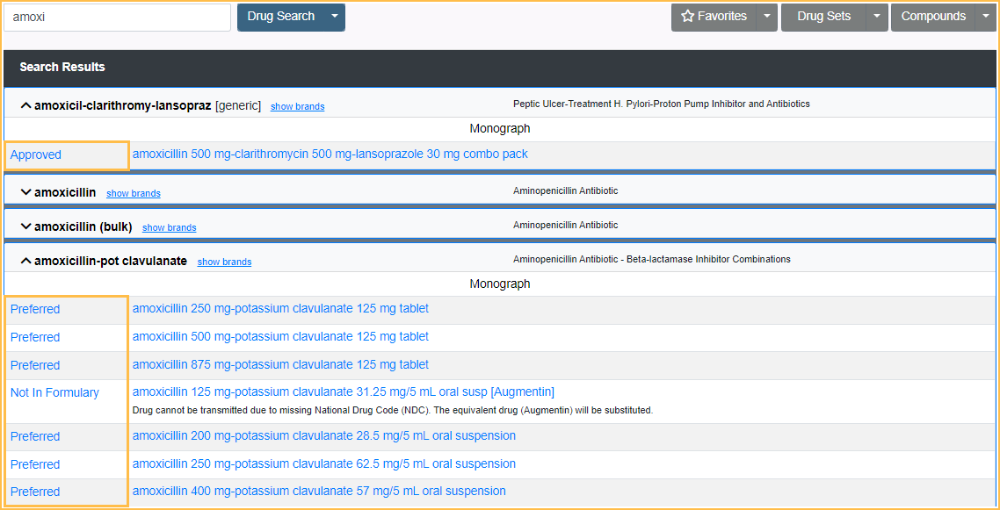
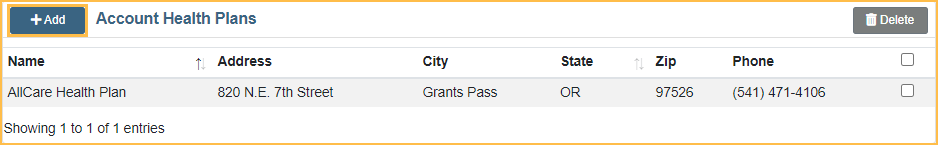

NewCrop eRx Drug Formulary Checks
Drug formulary checks automatically indicate insurance coverage when searching for drugs using the Ensora eRx (formerly NewCrop eRx) / Prescription interface.
Drug formulary checking is only available in the comprehensive version of Ensora eRx. For EHR measure details, see EHR Objective 4: ePrescribing.
Offices must complete two steps to set up drug formulary checks:
- Add health plans to the Ensora eRx Account Health Plans list. Health plans are preloaded in Ensora eRx.
- Attach health plans to patients in Ensora eRx. Insurance information from Open Dental is not passed to Ensora eRx.
Once set up, checks occur automatically when Writing and Transmitting Ensora eRx Prescriptions.
Add Health Plans to List
- In the Chart Module, click eRx to open the Ensora eRx interface.
- Click the Admin tab in the upper right corner.
- Click Account Health Plans in the List Maintenance area.
- Click Add. 
- Check the boxes next to any health plan(s) to add. By default, choices for the prescriber's state are listed. To search for national accounts, type in the search box and click Search
- If users cannot find the desired plan, try a different or shorter version of the name.
- Click Add.
- Once plans are added, a banner displays at the top of the window noting the number of plans added.
All selected health plans should now list under the Account Health Plans list.
Attach a Health Plan to a Patient
- In Ensora eRx, click the Pt Details tab.
- In the Health Plan Information section, click the appropriate dropdown for the type of health plan (e.g., Primary, Secondary, etc.) then select the patient's health plan.
- If the patient's insurance is not currently listed, click Add Health Plan from the dropdown and follow the steps in Add Health Plans to List above before proceeding
- Click Save.

The health plan is now attached to this patient. Ensora eRx automatically checks the formulary whenever drugs are searched and indicates formulary status.